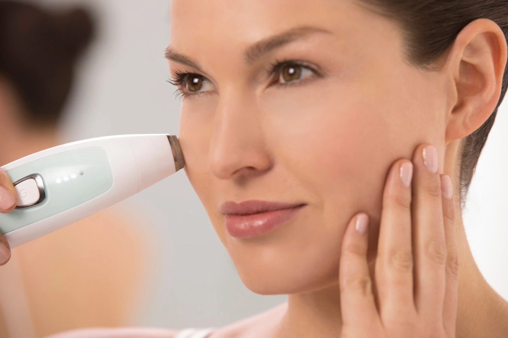

Limpeza de Pele
A limpeza de pele é um procedimento estético essencial para a manutenção de uma pele saudável e radiante. No RRCorpus, oferecemos uma limpeza de pele profunda, realizada por profissionais qualificados, utilizando produtos de alta qualidade para remover impurezas, cravos e células mortas, promovendo uma pele limpa e revitalizada.
Tipos de limpeza de pele que Oferecemos
Limpeza de pele convencional

Esse tipo de limpeza é ideal para todos os tipos de pele e pode ser realizada em casa ou por um profissional. A limpeza convencional remove as impurezas superficiais da pele, como maquiagem, oleosidade e células mortas.
Limpeza de pele profunda

A limpeza de pele profunda é um procedimento profissional que remove as impurezas mais profundas da pele, como cravos, espinhas e miliuns. Esse tipo de limpeza é ideal para peles oleosas, acneicas ou com poros dilatados.
Peeling químico

O peeling químico utiliza ácidos para remover as células mortas da camada superficial da pele, promovendo a renovação celular e clareando manchas.
Microdermoabrasão
A microdermoabrasão utiliza cristais minúsculos para esfoliar a pele e remover as impurezas.
Benefícios da limpeza de pele
Remoção de impurezas
A limpeza remove impurezas como maquiagem, oleosidade, células mortas, poluição e outros agentes externos que podem obstruir os poros e causar diversos problemas de pele, como cravos, espinhas e acne.
Pele mais saudável e bonita
Com a remoção das impurezas, a pele fica mais limpa, saudável, com viço natural e aparência radiante.
Prevenção de cravos e espinhas
A limpeza regular ajuda a prevenir o acúmulo de oleosidade nos poros, reduzindo a formação de cravos e espinhas, especialmente para quem tem pele oleosa ou acneica.
Controle da oleosidade
A limpeza ajuda a controlar a produção de oleosidade da pele, evitando a aparência oleosa e brilhante, principalmente na zona T (testa, nariz e queixo).
Nossa limpeza de pele segue um protocolo cuidadoso, que inclui:
Higienização
Limpeza inicial para remover maquiagem e impurezas superficiais.
Esfoliação
Remoção das células mortas para preparar a pele para a extração.
Extração
Remoção de cravos, espinhas e outras impurezas dos poros.
Máscara Calmante
Aplicação de uma máscara para acalmar e hidratar a pele.
Finalização
Aplicação de protetor solar e produtos específicos para cada tipo de pele.
Indicações de limpeza de pele
A limpeza de pele é indicada para todos os tipos de pele, especialmente aquelas com tendência à acne, oleosidade excessiva ou exposição a poluição. Recomendamos que o procedimento seja realizado mensalmente para manter os resultados. Após a limpeza de pele, é importante evitar a exposição ao sol e seguir as orientações dos nossos profissionais para cuidados diários.
Agende sua sessão
Experimente nossos serviços e sinta a diferença. Nossa equipe está preparada para oferecer o melhor atendimento e garantir sua satisfação. Agende sua sessão agora mesmo e desfrute de uma pele impecável.